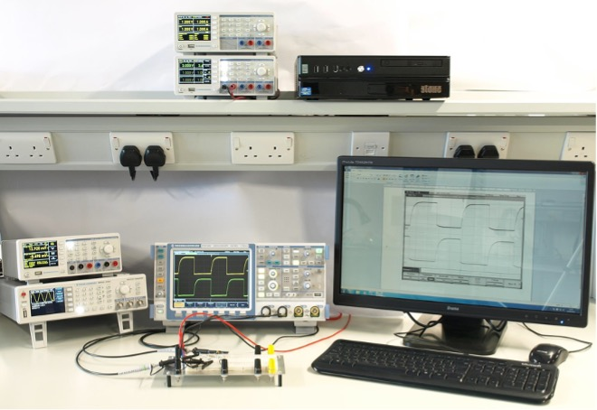

EG-151: Microcontrollers Laboratory Introduction#
In this laboratory introduction, you will do the following:
Experiment: to construct an oscillator circuit on a plug-in breadboard
Simulation exercise: to investigate the operation of the oscillator circuit using National Instruments Multisim, a circuit simulation package
Construction exercise: to build a continuity tester in a Tic-Tac® box
{kind=link}

Fig. 116 A photograph of one of the workstations located in Engineering East B107 Electronics Teaching Laboratory showing PC, the laboratory instruments and connections to a prototype circuit board.#
We expect that you will work through the exercises contained in this practical introduction in less than two weeks (four lab sessions), but a month has been allowed.
You should record your results in your lab diary.
After each significant section, there is an assignment point which you should use to submit your work for grading.
Table of contents#
You should work through each of these activities in order.
Laboratory Work in the Department of Electronic and Electrical Engineering
Obtain and Keep a Lab Diary - External Link to Canvas
If you would prefer a document version of the lab introduction, it is available as a PDF which you are welcome to download and use.
However, so your progress in the lab can be monitored, you are expected to work through the sections on Canvas.